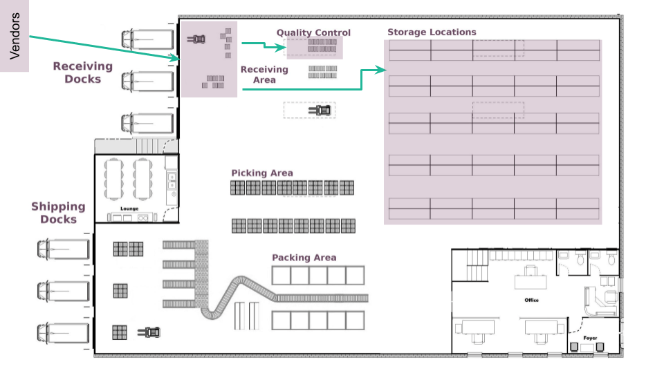
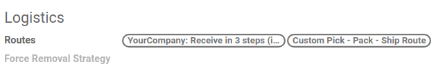
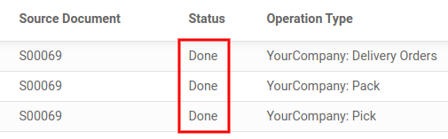

Routes and push/pull rules¶
In inventory management, the supply chain strategy determines when products should be purchased/manufactured, delivered to distribution centers, and made available to the retail channel.
In Odoo, a product’s supply chain strategy can be configured using Routes, which feature Pull and Push Rules. Once everything is properly configured, the Inventory app can automatically generate transfers following the configured push/pull rules.
Inside the warehouse¶
In a generic warehouse, there are receiving docks, a quality control area, storage locations, picking and packing areas, and shipping docks. All products go through all these locations. As the products move through the locations, each location triggers the products’ specified route and rules.

In this example, vendor trucks unload pallets of ordered products at the receiving docks. Operators then scan the products in the receiving area. Depending on the product’s route and rules, some of these products are sent to a quality control area (for example, products that are components used in the manufacturing process), while others are directly stored in their respective locations.
Here is an example of a fulfillment route. In the morning, items are picked for all the orders that need to be prepared during the day. These items are picked from storage locations and moved to the picking area, close to where the orders are packed. Then, the orders are packed in their respective boxes, and conveyor belts bring them to the shipping docks, ready to be delivered to customers.

Pull rules¶
With Pull Rules, a demand for some products triggers procurements, while Push Rules are triggered by products arriving in a specific location.
Pull Rules are used to fulfill a sales order. Odoo generates a need at the Customer Location for each product in the order. Because pull rules are triggered by a need, Odoo looks for a pull rule defined on the Customer Location.
In this case, a “delivery order†pull rule that transfers products from the Shipping Area to the Customer Location is found, and a transfer between the two locations is created.
Then, Odoo finds another pull rule that tries to fulfill the need for the Shipping Area: the “packing†rule that transfers products from the Packing Area to the Shipping Area. Finally, other pull rules are triggered until a transfer between the Stock and the Picking Area is created.
Note
All these product transfers are automatically generated by Odoo based on the pull rules, starting from the end (the customer location) and going backward (the stock warehouse). While working, the operator processes these transfers in the opposite order: first the picking, then the packing, and finally the delivery order.
Push rules¶
On the other hand, Push Rules are much easier to understand. Instead of generating documents based on needs, they are triggered in real time when products arrive in a specific location. Push rules basically say: “when a product arrives at a specific location, move it to another location.”
An example of a push rule would be: when a product arrives in the Receipt Area, move it to the Storage Location. As different push rules can be applied to different products, the user can assign different storage locations for different products.
Another push rule could be: when products arrive at a location, move them to the Quality Control Area. Then, once the quality check is done, move them to their Storage Location.
Note
Push rules can only be triggered if there are no pull rules that have already generated the product transfers.
Important
Sets of push/pull rules like those are called Routes. The grouping on the rule decides if products are grouped in the same transfer or not. For example, during the picking operation, all orders and their products are grouped in one transfer, whereas the packing operation respects the grouping per customer order.
Use routes and rules¶
Since Routes are a collection of Push and Pull Rules, Odoo helps you manage advanced route configurations such as:
Manage product manufacturing chains.
Manage default locations per product.
Define routes within the stock warehouse according to business needs, such as quality control, after-sales services, or supplier returns.
Help rental management by generating automated return moves for rented products.
To configure a route for a product, first, open the Inventory application and go to . Then, in the Warehouse section, enable the Multi-Step Routes feature and click Save.

Note
The Storage Locations feature is automatically activated with the Multi-Step Routes feature.
Once this first step is completed, the user can use pre-configured routes that come with Odoo, or they can create custom routes.
Pre-configured routes¶
To access Odoo’s pre-configured routes, go to . Then, open a warehouse form. In the Warehouse Configuration tab, the user can view the warehouse’s pre-configured routes for Incoming Shipments and Outgoing Shipments.

Some more advanced routes, such as pick-pack-ship, are also available. The user can select the route that best fits their business needs. Once the Incoming Shipments and Outgoing Shipments routes are set, head to to see the specific routes that Odoo generated.
On the Routes page, click on a route to open the route form. In the route form, the user can view which places the route is Applicable On. The user can also set the route to only apply on a specific Company. This is useful for multi-company environments; for example, a user can have a company and warehouse in Country A and a second company and warehouse in Country B.

At the bottom of the route form, the user can view the specific Rules for the route. Each Rule has an Action, a Source Location, and a Destination Location.

Custom Routes¶
To create a custom route, go to , and click on Create. Next, choose the places where this route can be selected. A route can be applicable on a combination of places.

Each place has a different behavior, so it is important to tick only the useful ones and adapt each route accordingly. Then, configure the Rules of the route.
If the route is applicable on a product category, the route still needs to be manually set on the product category form by going to . Then, select the product category and open the form. Next, click Edit and under the Logistics section, set the Routes.
When applying the route on a product category, all the rules configured in the route are applied to every product in the category. This can be helpful if the business uses the dropshipping process for all the products from the same category.
The same behavior applies to the warehouses. If the route can apply to Warehouses, all the transfers occurring inside the chosen warehouse that meet the conditions of the route’s rules will then follow that route.

If the route is applicable on Sales Order Lines, it is more or less the opposite. The route must be manually chosen when creating a quotation. This is useful if some products go through different routes.
Remember to toggle the visibility of the Route column on the quotation/sales order. Then, the route can be chosen on each line of the quotation/sales order.

Finally, there are routes that can be applied to products. Those work more or less like the product categories: once selected, the route must be manually set on the product form.
To set a route on a product, go to and select the desired product. Then, go to the Inventory tab and under the Operations section, select the Routes.

Important
Rules must be set on the route in order for the route to work.
Rules¶
The rules are defined on the route form. First, go to and open the desired route form. Next, click Edit and in the Rules section, click on Add a line.

The available rules trigger various actions. If Odoo offers Push and Pull rules, others are also available. Each rule has an Action:
Pull From: this rule is triggered by a need for the product in a specific location. The need can come from a sales order being validated or from a manufacturing order requiring a specific component. When the need appears in the destination location, Odoo generates a picking to fulfill this need.
Push To: this rule is triggered by the arrival of some products in the defined source location. In the case of the user moving products to the source location, Odoo generates a picking to move those products to the destination location.
Pull & Push: this rule allows the generation of pickings in the two situations explained above. This means that when products are required at a specific location, a transfer is created from the previous location to fulfill that need. This creates a need in the previous location and a rule is triggered to fulfill it. Once the second need is fulfilled, the products are pushed to the destination location and all the needs are fulfilled.
Buy: when products are needed at the destination location, a request for quotation is created to fulfill the need.
Manufacture: when products are needed in the source location, a manufacturing order is created to fulfill the need.

The Operation Type must also be defined on the rule. This defines which kind of picking is created from the rule.
If the rule’s Action is set to Pull From or Pull & Push, a Supply Method must be set. The Supply Method defines what happens at the source location:
Take From Stock: the products are taken from the available stock of the source location.
Trigger Another Rule: the system tries to find a stock rule to bring the products to the source location. The available stock is ignored.
Take From Stock, if Unavailable, Trigger Another Rule: the products are taken from the available stock of the source location. If there is no stock available, the system tries to find a rule to bring the products to the source location.
Example flow¶
In this example, let’s use a custom Pick - Pack - Ship route to try a full flow with an advanced custom route.
First, a quick look at the route’s rules and their supply methods. There are three rules, all Pull From rules. The Supply Methods for each rule are the following:
Take From Stock: When products are needed in the WH/Packing Zone, picks (internal transfers from WH/Stock to WH/Packing Zone) are created from WH/Stock to fulfill the need.
Trigger Another Rule: When products are needed in WH/Output, packs (internal transfers from WH/Packing Zone to WH/Output) are created from WH/Packing Zone to fulfill the need.
Trigger Another Rule: When products are needed in Partner Locations/Customers, delivery orders are created from WH/Output to fulfill the need.

This means that, when a customer orders products that have a pick - pack - ship route set on it, a delivery order is created to fulfill the order.

Note
If the source document for multiple tranfers is the same sales order, the status is not the same. The status will be Waiting Another Operation if the previous transfer in the list is not done yet.
To prepare the delivery order, packed products are needed at the output area, so an internal transfer is requested from the packing zone.

Obviously, the packing zone needs products ready to be packed. So, an internal transfer is requested to the stock and employees can gather the required products from the warehouse.

As explained in the introduction of the documentation, the last step in the process (for this route, the delivery order) is the first to be triggered, which then triggers other rules until we reach the first step in the process (here, the internal transfer from the stock to the packing area). Now, everything is ready to be processed so the customer can get the ordered items.
In this example, the product is delivered to the customer when all the rules have been triggered and the transfers are done.
